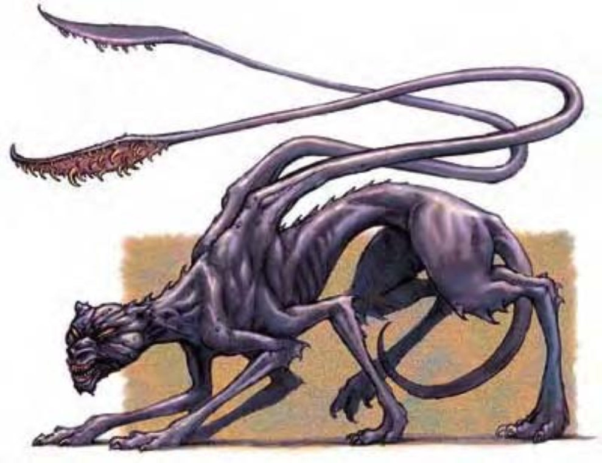

他们看起来像削瘦的黑豹，毛皮为蓝黑色，六只脚，躯体纯粹由肌肉与骨骼组成。一对触手由肩膀伸出，末端为带骨质尖刺的肉盘。
移位兽是野蛮、擅于隐匿的肉食性生物，有点像美洲狮。
移位兽喜欢小猎物，但会吃任何能捉到的东西。他们把其他生物都当作食物，倾向攻击遇上的任何东西。移位兽对闪现犬怀有深切的恨意，双方一碰面即相互残杀。移位兽有孟加拉国虎大，约9英尺长，500磅重。
移位兽通晓通用语。
战斗移位兽以触手撕裂对手。接近时，则使用啮咬攻击。
移位（超自然）：移位兽为折射光线的魔力持续包围，其真正位置难以辨识。除非攻击者能以视觉外的方式找出移位兽所在地，否则任何对移位兽的近战或远程直接攻击均有50%机率失手。法术"真实目光"可定出其位置，但"识破隐形"则不可。
远程攻击抗力（超自然）：移位兽对瞄准自己的远程魔法攻击（远程接触攻击除外）进行豁免检定时，有+2抗力加值。
技能：由于具有移位能力，移位兽进行"躲藏"检定时具有+8种族加值。
由于构造奇特，移位兽偶尔产出变种后代。这些后代体型更大，可达20英尺长，直立时肩膀10英尺高。人们称这些巨大怪物为移位兽王，经常是移位兽的领袖。
除了体型与力量，移位兽王与一般移位兽相似。
| 资料栏位 | 移位兽 (Displacer Beast) 大型魔法兽 |
| 生命骰 | 6d10+18（51HP） |
| 先攻 | +2 |
| 速度 | 40英尺（8格） |
| 防御等级 | 16（-1体型、+2敏捷、+5天生）、接触11、措手不及14 |
| 基本攻击/擒抱 | +6 / +14 |
| 攻击 | 触手+9近战（1d6+4） |
| 全力攻击 | 2触手+9近战（1d6+4）及啮咬+4近战（1d8+2） |
| 占据/触及 | 10英尺 / 5英尺（使用触手时10英尺） |
| 特殊攻击 | ― |
| 特殊能力 | 黑暗视觉60英尺、移位、昏暗视觉、远程攻击抗力 |
| 豁免 | 强韧+8、反射+7、意志+3 |
| 属性 | 力量18、敏捷15、体质16、智力5、感知12、魅力8 |
| 技能 | 躲藏+10、聆听+5、潜行+7、侦察+5 |
| 专长 | 警觉、闪避、隐匿 |
| 环境 | 温带丘陵 |
| 组织 | 单独、成双或兽群（6-10） |
| 挑战级数 | 4 |
| 宝藏 | 十分之一钱币、50%宝物、50%物品 |
| 阵营 | 通常守序邪恶 |
| 进化 | 7-9HD（大型）；10-18HD（超大型） |
| 等级修正值 | +4 |
| 资料栏位 | 移位兽王 (Displacer Beast Pack Lord) 超大型魔法兽 |
| 生命骰 | 18d10+92（203HP） |
| 先攻 | +1 |
| 速度 | 40英尺（8格） |
| 防御等级 | 17（-2体型、+1敏捷、+8天生）、接触9、措手不及16 |
| 基本攻击/擒抱 | +6 / +14 |
| 攻击 | 触手+25近战（1d8+8） |
| 全力攻击 | 2触手+25近战（1d8+8）及啮咬+19近战（2d6+4） |
| 占据/触及 | 15英尺 / 10英尺（使用触手时20英尺） |
| 特殊攻击 | ― |
| 特殊能力 | 黑暗视觉60英尺、移位、昏暗视觉、远程攻击抗力 |
| 豁免 | 强韧+16、反射+14、意志+9 |
| 属性 | 力量26、敏捷13、体质20、智力5、感知12、魅力8 |
| 技能 | 躲藏+11、聆听+4、潜行+6、侦察+10 |
| 专长 | 警觉、战斗反射、闪避、钢铁意志、快速反射、健壮、专攻武器（触手） |
| 环境 | 温带丘陵 |
| 组织 | 单独或成双 |
| 挑战级数 | 12 |
| 宝藏 | 十分之一钱币、50%宝物、标准物品 |
| 阵营 | 通常守序邪恶 |
| 进化 | ― |
| 等级修正值 | ― |